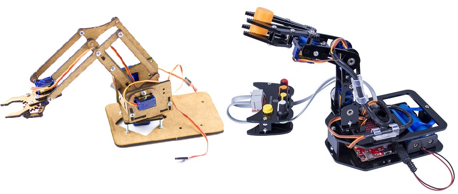
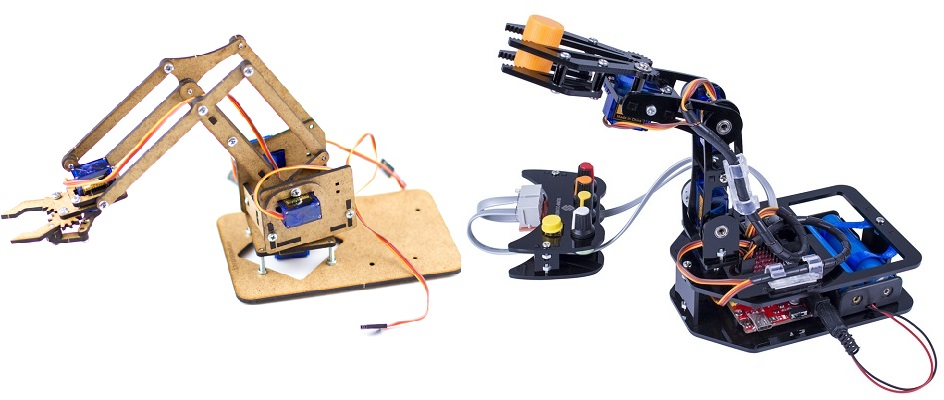

Scratch for Arduino робить програмування під Arduino більш наочним
Якщо ви шукаєте щось більш наочне для програмування Arduino, то Scratch for Arduino (S4A) це саме те, що ви шукали. Вона використовує MIT's Scratch в якості основи для навчання дітей (або просто початківців) програмування Arduino. Ідея полягає в тому, щоб надати вам більш наочну мову програмування, щоб ви краще розуміли як це працює. Навіть якщо ви професіонал в програмуванні Arduino, то навіть вам буде цікаво попрацювати з даною програмою. Це відмінна програма для початкового програмування Arduino, для того щоб ви розібралися як з ним працювати.
У S4A, плата Arduino являє собою особливий вид спрайту. Спрайт Arduino автоматично знайде USB-порт, до якого підключена плата. Існує можливість підключення до декількох плат одночасно, просто додайте новий спрайт Arduino.
Підключення
Компоненти повинні бути пов'язані певним чином. S4A підтримує 6 аналогових входів (аналогові контакти), 2 цифрових входи (цифрові контакти 2 і 3), 3 аналогових виходи (цифрові контакти 5, 6 і 9), 3 цифрових виходи (контакти 10, 11 і 13) і 4 спеціальних виходів для підключення серводвигунів (цифрові контакти 4, 7, 8 і 12). Ви можете керувати платою шляхом приєднання до неї бездротового RF модуля, такого як Xbee. Так само S4A дозволяє керувати платою через USB порт.